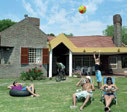

Match the cities to their definitions. Which one would you like to visit on holiday? Why? What would you like to do there?
| City | Definition |
|---|---|
| Moscow, Russia |
a. Victoria Harbour and its most famous culinary dish, Dim Sum |
| London, England |
b. Big Ben and British Parliament are in this city |
| Seoul, Korea |
c. hosted the 1988 Summer Olympics and the 2002 FIFA World Cup |
| Tokyo, Japan |
d. has the Imperial Palace and was also destroyed by the famous movie monster Godzilla |
| Hong Kong, China |
e. known for the Kremlin, the Moskva River also runs through this city |
A staycation involves staying at home and having a holiday there (either literally in your home or in your home country or city). What do you think is the idea behind a staycation? What sort of things can you do on a staycation? Make notes. Then, listen and check. Were any of your ideas mentioned?
Can’t afford to go away on holiday? Take a “staycation” – a vacation at home.
A recent study shows American families are not travelling much this year. Rising gas and food prices, along with job insecurity and a struggling economy means thousands of people choose to stay close to home, instead of hopping on a plane or driving somewhere. Retailers see Americans buying a lot less than normal, as people have less money to spend. National department store chains such as Wal-Mart and Target are pushing low-cost vacation activities along with the traditional barbeque and camping equipment sold this time of year. Both stores have launched summer ad campaigns that focus on fun in the backyard. “Americans still want to have a holiday,” said Wal-Mart spokeswoman Melissa O'Brien. “They want to enjoy those quick weekend getaways and socialising around the backyard cookout.”
But even with low-cost staycations, many Americans are watching their wallets. Those backyard barbecues cost 6% more this year than last year. However, people are spending more money on home decorating, retailers report. And they buy items like scented candles and plants – things to make staying home more pleasant. At least you can be surrounded by beautiful things on your staycation. ✪
Choose the correct definitions of words and expressions from the article.
When you come across a word you don’t know, it’s very important to stop and try to break the word down into smaller parts. In many cases, this will help you work out the meaning. Try it!
It is very fashionable to create words from new phenomena. Can you think of any in English or in your own language?